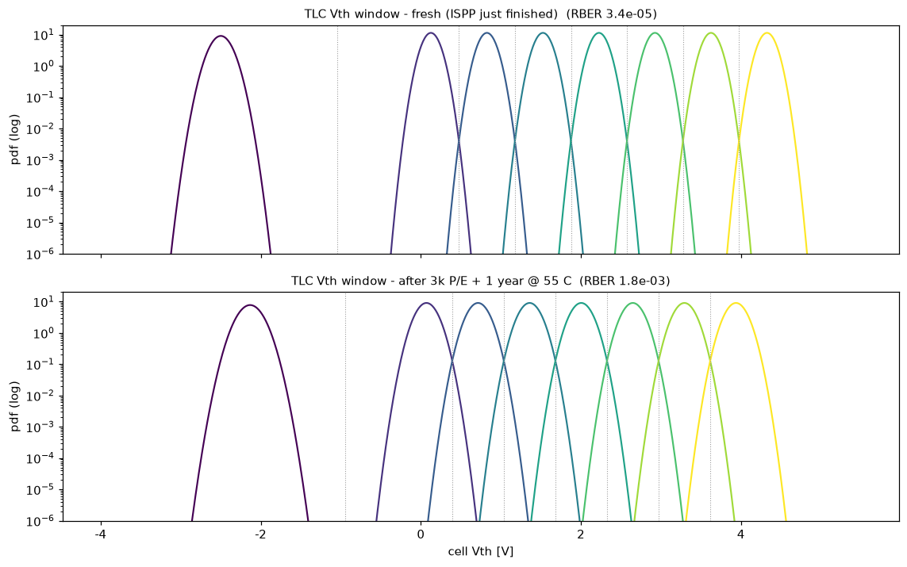
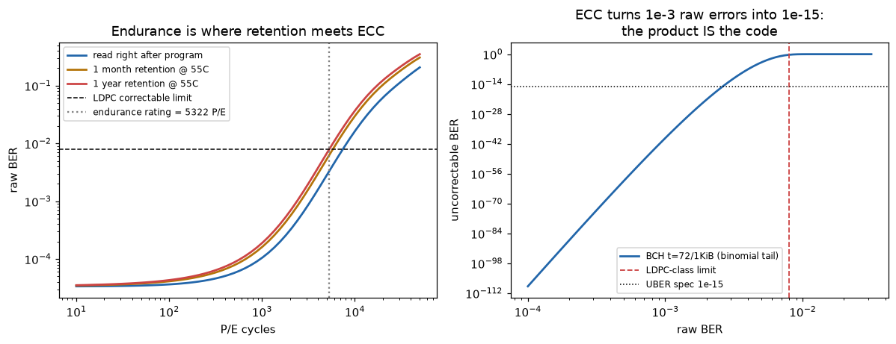

フラッシュ製品は4つの物理の交渉で決まる：ISPP書込みのVth分布・P/Eサイクルの酸化膜劣化・リテンション（Arrhenius）・ECCの訂正限界。セル集団レベルで一気通貫にシミュレーションし、「耐久定格○○P/E」という商品スペックが物理のどこから出てくるかを導出した。
Incremental Step Pulse Programming をモンテカルロ実装：各セルはΔVpgm=0.25V刻みのパルス-ベリファイでVthを登り、越えた瞬間に止まる→状態分布はuniform(ΔVpgm)⊕ガウスノイズ（理論どおりの幅をテストで検証）。TLCは8状態×7境界。サイクル劣化（酸化膜トラップ生成でσ∝cycles^0.6・消去状態のクリープ）とリテンション（電荷量比例のデトラップ、Arrhenius加速 Ea=1.1eV）で窓が両側から閉じていく様子を解析分布で追跡。

fresh RBER 3.4e-5 → 3k P/E＋1年@55°Cで 1.8e-3（85°Cなら2.4e-3）。出所：memdev/nand_sim.py。
生のビット誤り率（RBER）は隣接分布の重なりから解析計算（最適読み出し点のerfc）。製品スペックは「誤りゼロ」ではなく「訂正可能な誤り」：BCH t=72/1KiBの二項裾はRBER 1e-3をUBER 5e-40に潰すが、6e-3では1e-2に破綻——この崖の位置（LDPC級で8e-3）と1年リテンション曲線の交点が耐久定格5322 P/E（85°C保管なら4763）。「ECCがNANDの寿命を作る」を1枚で。
